Weekly Running Plans & Progress
Running, cycling, hiking and strength — pulled from the Strava API and regenerated automatically. See the main branch for what this repo is and how it works.
📈 Weekly volume progression
Based on the 10% rule, but build-up grows at +25%/week while the target stays below the dark-gray dashed line — the highest 3-consecutive-week average volume of the last half year (a previously sustained level). Once a +25% step would reach that line, growth reverts to +10%. The next unreached target (this or next week) drives the plots below.
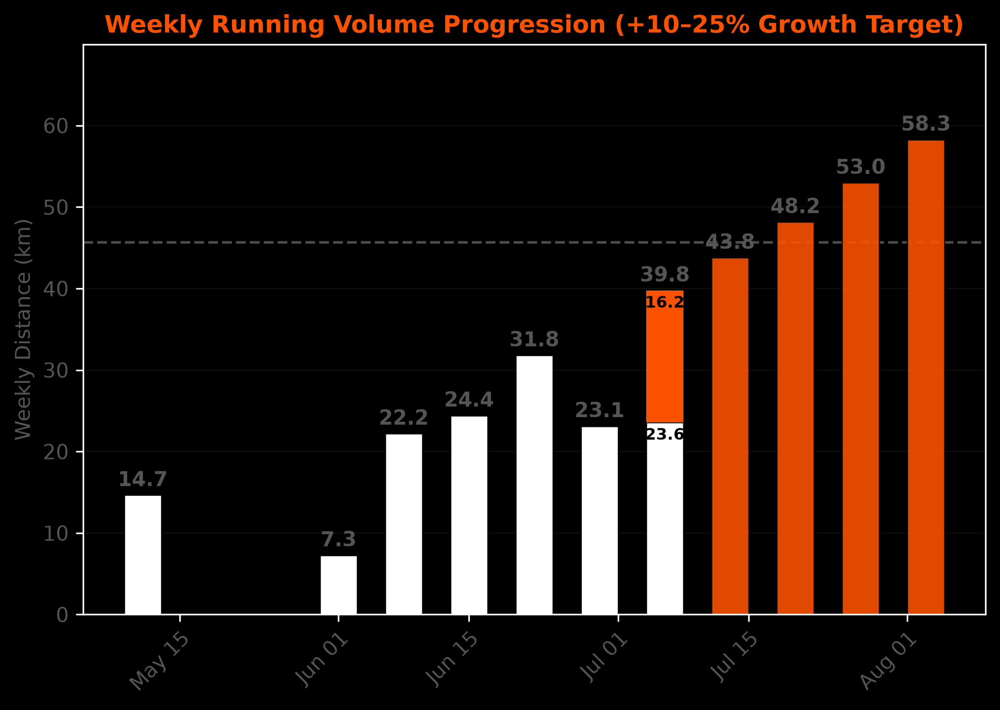
Example week plans
How a week could be divided into multiple runs, given the target mileage.
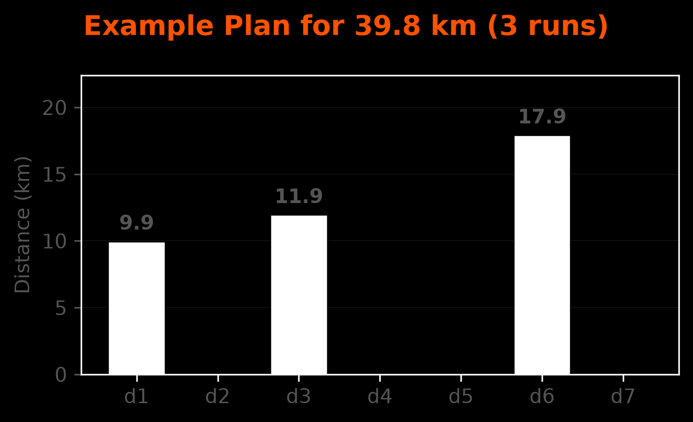
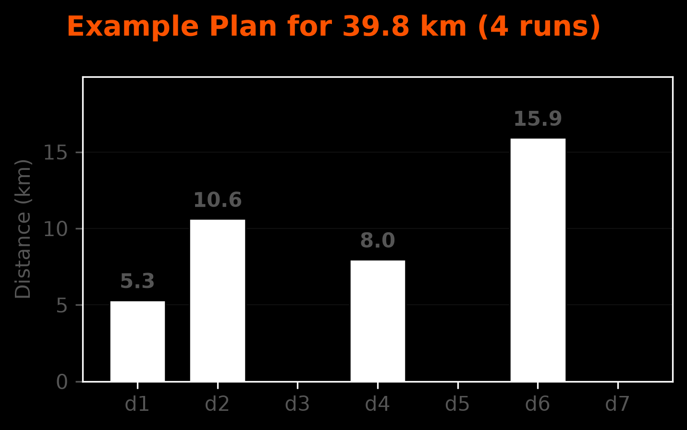
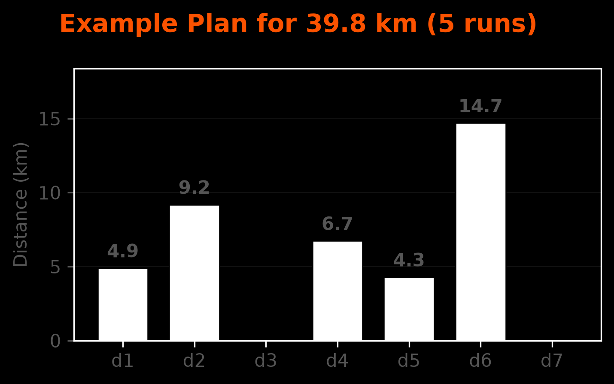
Current / next week plans
Ran runs in white, proposed runs in orange — auto-updated, and trying to stick to the schemes above.
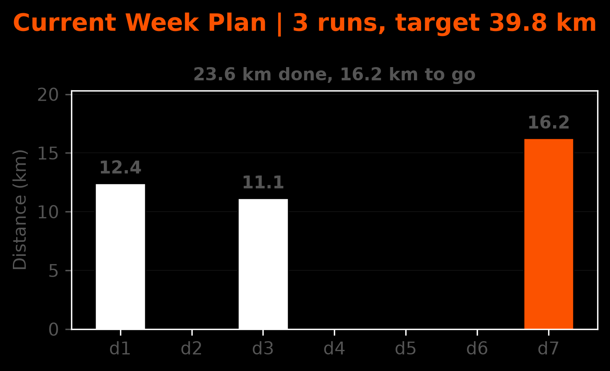
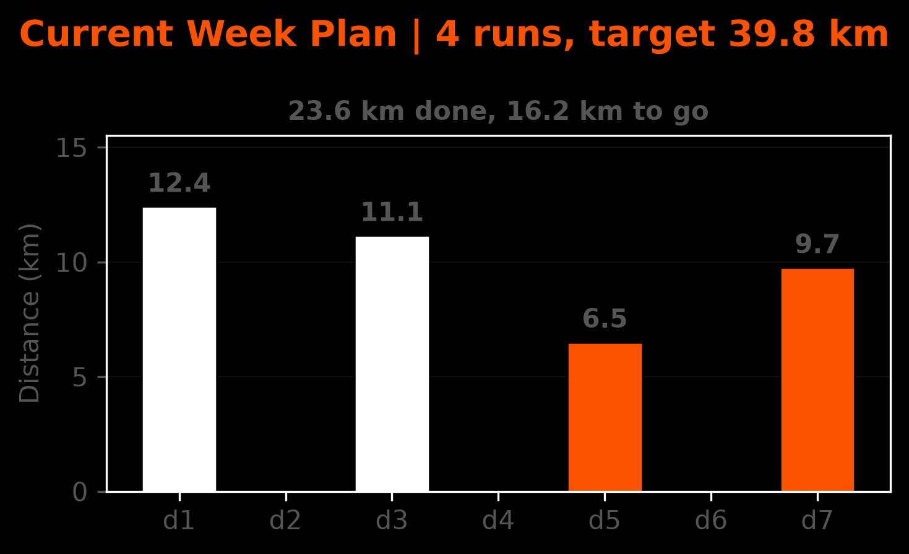
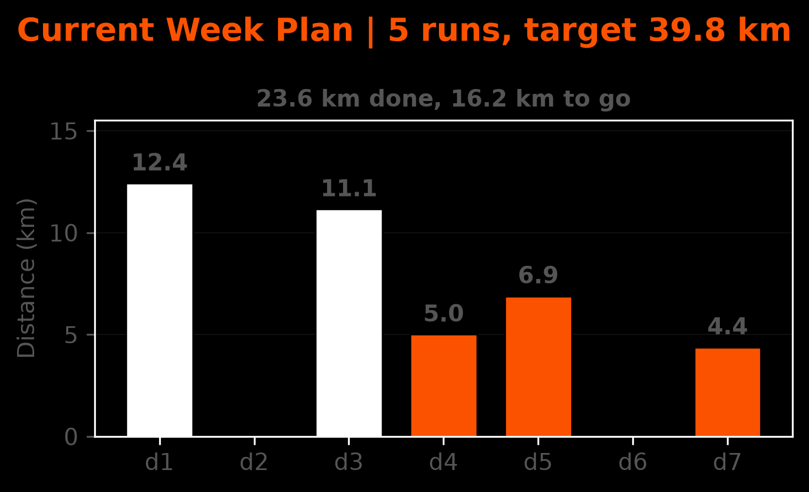
Weekly stacked plots
Stacked barplots showing run stacks for each week.
Risk combines distance from the normal distribution — faster and longer runs contribute more risk, slower and shorter less.
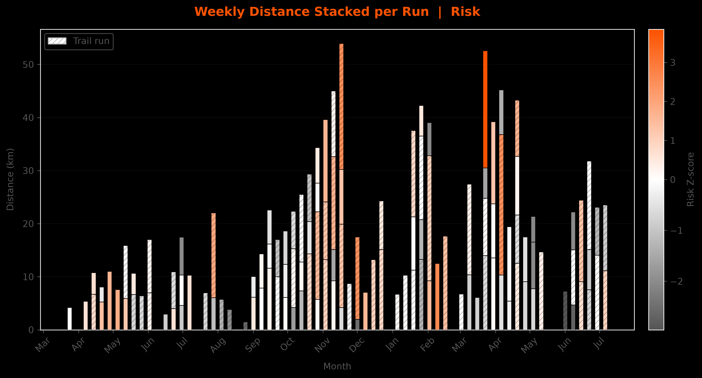
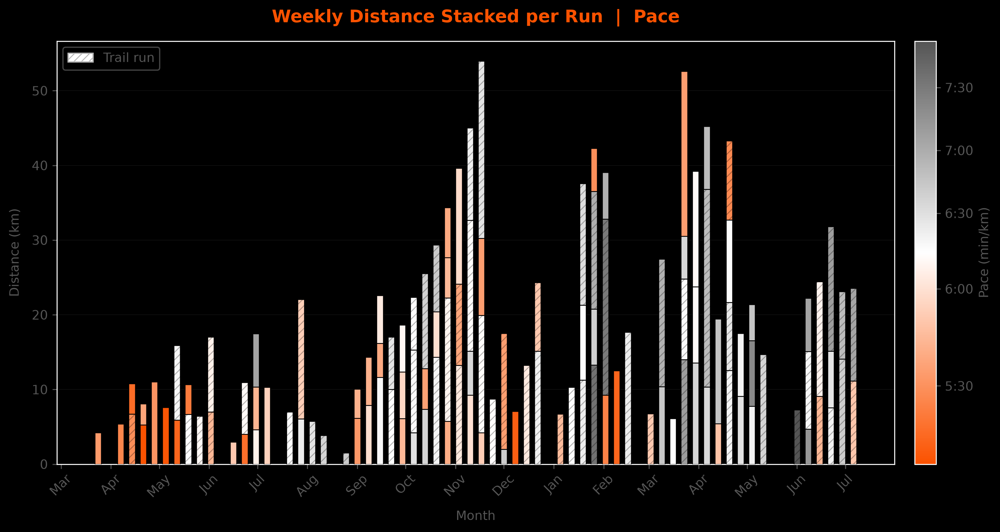
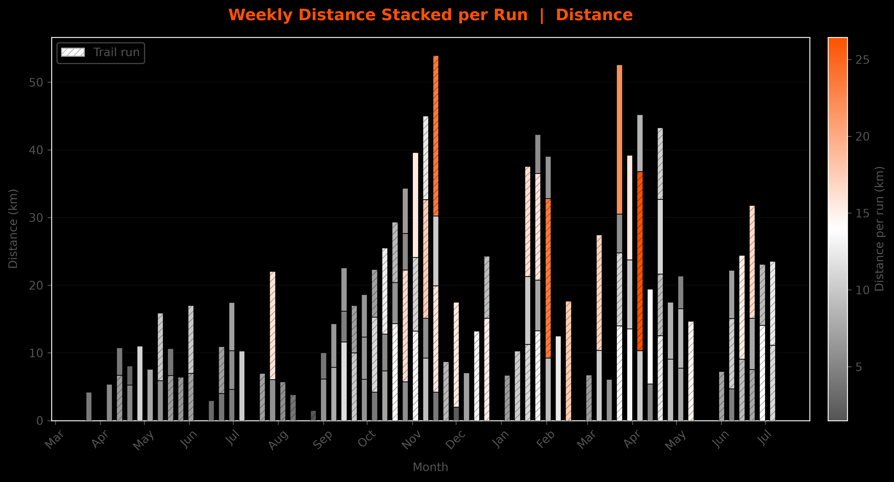
🚴 Cycling
Each bar = one week. Each stack segment = one ride — height is distance, color is average speed (km/h).
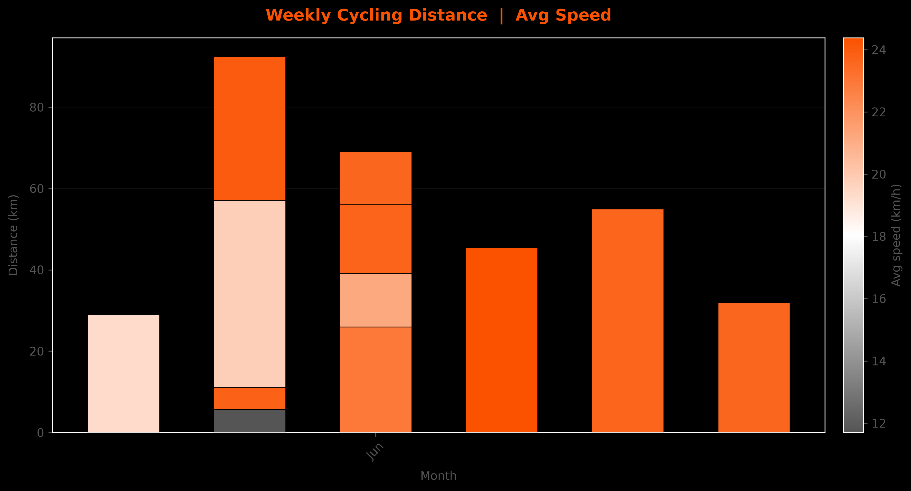
🥾 Hiking
Each bar = one week. Each stack segment = one hike — height is distance, color is carried weight (kg, parsed from title / description / private note; 0 if not reported).
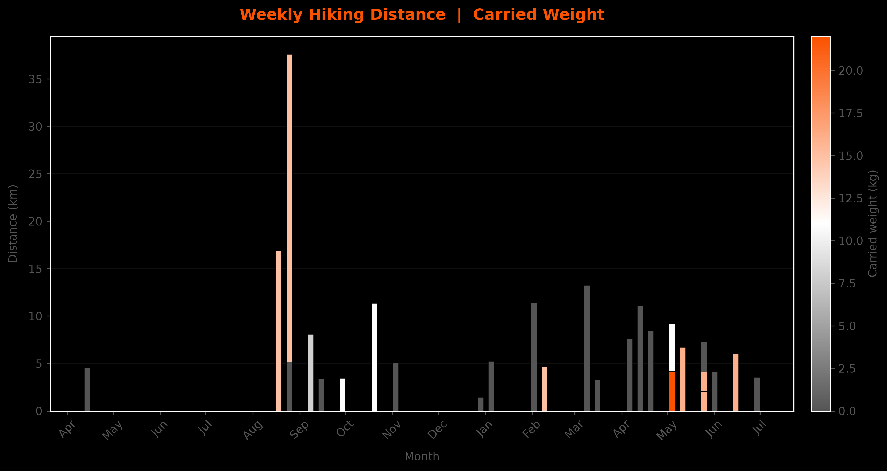
🏋️ Strength
Each bar = one week. Each stack segment = one session — height is total volume
(kg), color is volume rate (kg/min). Volume is parsed from NNNN kg volume in
description / private note.
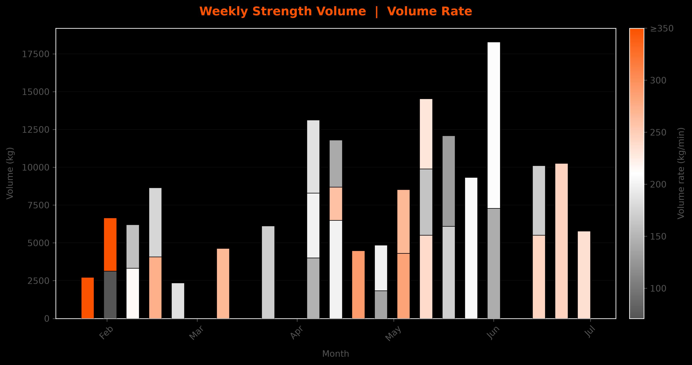
🏃 🚴 🥾 🏋️ All-sports overview
Running, cycling, hiking and strength stacked on a shared time axis. Color encodes speed (run/ride), carried weight (hike) and volume rate (strength).
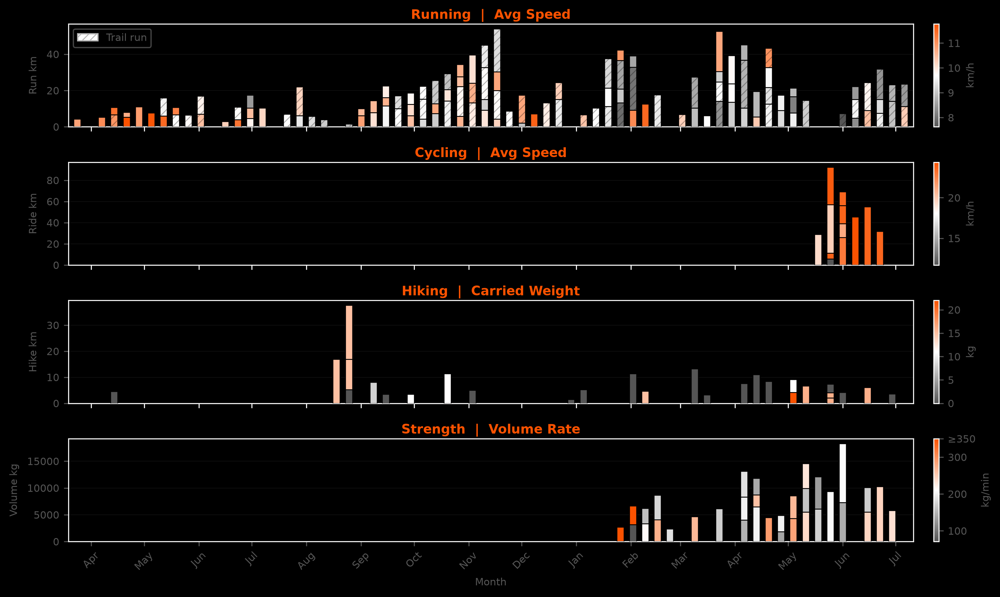
📅 Monthly activity calendar
Strava-style month view: each day is a circle, filled on activity days (letter = sport: Trail, Run, Hike, Strength, Bike). Color and size follow the overview's metric scale and bar magnitude. See all months →

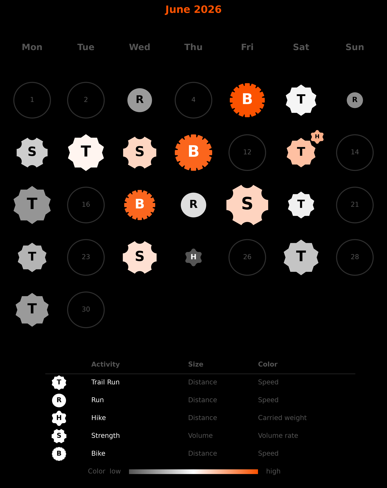